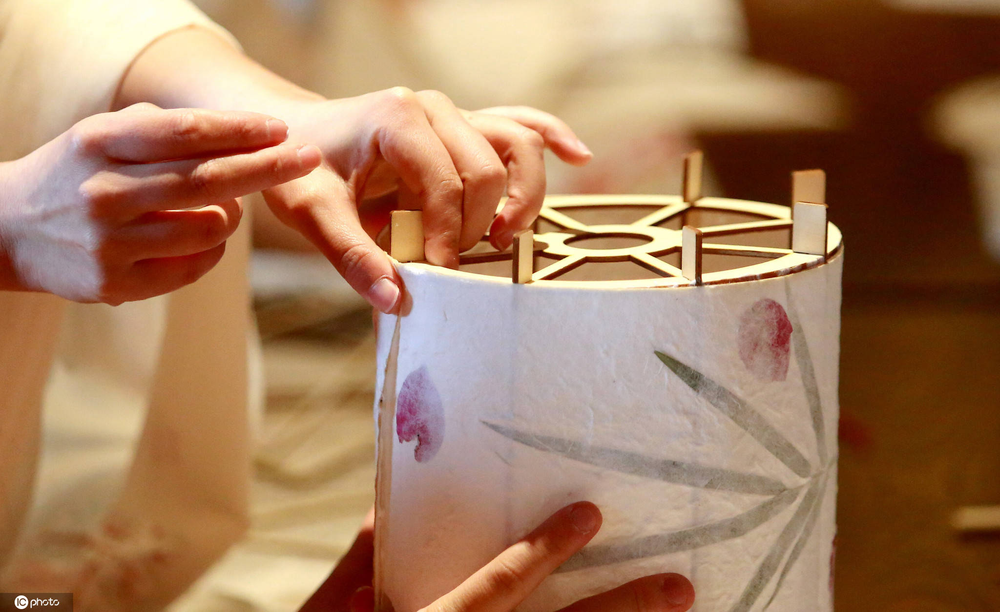

四大核心工序
01
设计与扎骨架
“扎”是灯彩的基础。工匠需先在脑中构思或绘制图纸。对于传统有骨花灯，选用柔韧性极好的毛竹，劈成细篾。经过火烤定型，用纸捻或细铁丝将竹篾绑扎成灯的立体骨架。骨架要求横平竖直、左右对称、受力均匀，是决定花灯最终造型是否完美的首要前提。
02
裱糊与裁衣
“糊”是花灯的皮肉。在扎好的骨架上，涂上特制的浆糊，将透光性好的绵纸、拷贝纸或五彩绸布平整地绷贴上去。这一步极考验手感，纸张不能起皱，更不能破损。对于潮州人物灯，这一步则是为人物“裁衣”，穿上华丽的丝绸服饰，讲究褶皱的自然下垂。
03
刻纸与针刺
这是部分流派（如泉州、仙居）的独门绝技。刻纸艺人使用锋利的刻刀，在纸板上行云流水般剔除留白，形成复杂的图样；针刺艺人则手持绣花针，按照图案轮廓与肌理，在纸面上扎出数以十万计的微孔。这些需要极端的耐心，一刀刻错或一针扎偏，便前功尽弃。
04
彩绘与组装
“绘”赋予花灯灵魂。工匠用毛笔蘸取水彩或国画颜料，在糊好的纸面上描绘山水、花鸟或人物面部。最后进行总装，挂上流苏、玉佩、料丝等装饰配件，并安装内部光源。一盏倾注了无数心血的非遗花灯，至此才算大功告成。
工匠的工具箱

“工欲善其事，必先利其器”
一位成熟的花灯手艺人，其工作台上通常摆满了上百种大小不一的工具，每一件都伴随着岁月的包浆：
- 篾刀与火盆： 用于劈削竹子和烘烤竹篾定型。
- 刻刀组合： 多达几十把不同斜度与宽度的刻刀，应对泉州花灯极其复杂的直线与弧线雕镂。
- 各号绣花针： 仙居无骨花灯的灵魂工具，通常使用直径极细的12号绣花针进行扎孔。
- 骨笔与画刷： 用于压实纸张边缘的骨笔，以及用来彩绘、晕染色彩的各式羊毫、狼毫毛笔。
- 纸捻子： 传统工匠摒弃胶带，全凭纯手工搓成的极细纸条（纸捻）将骨架牢牢绑紧，历经岁月而不散散。